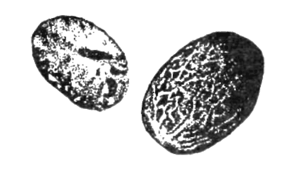

Мускатный цвет и мускатный орех

Пряности, получаемые из плодов мускатного дерева — мускатника (myristica fragrans houtt.) семейства мускатниковых, от 6 до 18 метров высотой.
Родина — восточная часть Молуккских островов. Растет и культивируется в тропических странах Юго-Восточной Азии — Индонезии и Малайзии, а также на некоторых островах.
Одно дерево дает от 1500 до 2000 плодов. Плоды мускатного дерева представляют собой большие, ярко-желтые или серо-желтые, напоминающие персик фрукты, которые при полном созревании лопаются пополам и обнажают семя, не полностью покрытое тонкой, но довольно мясистой кровелькой-присеменником (ариллусом) и, кроме того, твердой, деревянистой, но тонкой темно-бурой оболочкой (скорлупой). Из ариллуса получают пряность, называемую в продаже мускатным цветом, а из самого семени — пряность, называемую мускатным орехом.
Мускатный цвет.
Синонимы: мацис, мэс. Мускатный цвет, следовательно, не имеет ничего общего с цветком мускатного дерева, а представляет собой присеменник, то есть мягкую кожицу, покрывающую большую часть семени мускатного дерева наподобие лепестков. В свежем виде мускатный цвет ярко-красного (рубинового) или ярко-малинового цвета. После сушки этот цвет меняется на оранжевый и после непродолжительного хранения на оранжево-желтый или темно-желтый.
Обычно ариллус стараются снять неповрежденным, выдавливая из него орех. В таком случае в центре мускатного цвета образуется отверстие (дырочка), остающееся и после сушки, по которому распознается целый, неповрежденный мускатный цвет, ценимый значительно выше ломаного. Сушка производится на бамбуковых или кокосовых циновках прямо на солнце. Первым признаком высыхания, уже к концу первого дня, является потеря мускатным цветом сочности, упругости и яркой окраски: он становится вялым, мягким. В этом податливом состоянии ему придается плоский вид (его сплющивают деревянными «утюгами» или катками), чтобы в дальнейшем, когда он полностью высохнет (через 2—3 дня) и станет хрупким, его было удобнее упаковывать и предохранять от поломки.
Готовый хороший, доброкачественный мацис должен представлять собой твердую, очень хрупкую, слегка просвечивающую как бы роговую пластинку длиной 3 — 4, шириной 2—3 сантиметра и толщиной 1 миллиметр, ровно окрашенную в светло-оранжевый или темно-желтый цвет с отверстием в центре и разделяющуюся по краям на 10—15 лопастей. Текстура (рисунок ткани) хорошего мациса всегда резко выражена.
Лучший мускатный цвет получается из так называемых вторых листочков, лежащих ближе к семени.
Более всего на мировом рынке ценятся пенангский (наилучший) мускатный цвет и банданский (высокого сорта).
Мускатный орех
Мускатный орех получается в результате еще более длительной и сложной обработки, чем мускатный цвет. Освобожденные от околоплодника и присеменника семена мускатника поступают в специальные сушильни — легкие бамбуковые постройки с чуть прикрытой пальмовыми ветвями крышей, где под высокими бамбуковыми козлами разводится небольшой бездымный огонь, а на козлы в огромных бамбуковых решетках помещают семена мускатника. Огонь поддерживается круглосуточно в течение полутора месяцев, если сушка идет хорошо, в противном случае сушка затягивается до двух и даже трех месяцев, причем ежедневно к исходу дня орехи переворачивают деревянными граблями, чтобы высушивание шло как можно равномернее. Когда орехи высыхают и их оболочка начинает отставать от ядра (при переворачивании орехи начинают греметь), их тонкую скорлупу разбивают деревянными или каменными (но только не металлическими) молотками или пестами и освобождают ядра. Эти ядра яйцевидной формы, светло-бурого цвета, испещренные более темными, прихотливо ветвящимися и немного возвышающимися над поверхностью ореха сосудиками. Но на этом «приключения» мускатного ореха не кончаются. Освобожденные от скорлупы ядра помещают на несколько минут в известковое молоко (смесь морской воды и извести, получаемой из известняков кораллов) и тщательно в нем перемешивают, после чего вновь сушат в тени от одной до трех недель. Таким образом, производство мускатных орехов иногда затягивается почти до четырех месяцев.

Готовый мускатный орех представляет собой ядро несколько неровной яйцевидной формы (2—3 сантиметра в длину и 1,5—2 сантиметра в поперечнике), серо-коричневого цвета, изборожденное светло-бежевой сетью морщинок. На одном полюсе ореха — светлое пятно, на другом — хуже заметное — темно-коричневое, иногда даже черное. На срезе мускатный орех имеет характерный мраморный рисунок: по бежевому полю — темно-коричневые полоски-вкрапления.
* * *Мускатный орех и мускатный цвет обладают по-разному сильным и утонченным ароматом и пряно-жгучим вкусом (разные оттенки и тембр). Эти ароматическо—вкусовые различия дают основания считать их совершенно не аналогичными одна другой пряностями. Отсюда — неодинаковая сфера применения их. Иногда они применяются вместе как дополняющие и обогащающие друг друга две различные пряности.
Мускатный орех имеет более широкую сферу применения. Он употребляется у нас чаще всего в сладких блюдах (варенья, компоты, муссы, пудинги, творожные пасты) и кондитерских изделиях из теста (крендели, кексы, куличи, бисквиты, печенье, сладкие пироги). В западноевропейской кухне мускатный орех применяется для ароматизации овощей — в салаты и пюре (холодные и горячие) из картофеля, брюквы, репы, шпината, овощные супы, почти во все грибные блюда (грибные супы, соусы, салаты, маринады, отварные грибы), в блюда из всех видов домашней птицы (куры, индейки, утки, гуси), в макароны, в блюда из мелкой жирной дичи (перепела), в нежные и пресные виды мяса (телятина, молодая свинина), в блюда из субпродуктов и, наконец, в рыбные блюда (отварная и тушеная рыба, рыбные супы, заливное). Наиболее эффектно употребление мускатного ореха во всевозможных блюдах из мясных и рыбных фаршей (рулеты, запеканки) и вообще в начинках, где сочетаются мясо (или рыба) с овощами, грибами, тестом, а также в соусах, многим из которых мускатный орех придает основной аромат.
Мускатный цвет также употребляется в большинстве из вышеперечисленных типов блюд, за исключением грибных, рыбных, макаронных и из дичи. Мускатный цвет хорошо сочетается с мускатным орехом в мясных блюдах. Так же, как мускатный орех, мускатный цвет является важным компонентом различных соусов, во многих из которых он употребляется самостоятельно (без мускатного ореха), придавая им специфический аромат.
Интересно отметить, что в соусах английской и немецкой кухни мускатного цвета всегда вдвое больше, чем мускатного ореха (например, в йоркширском, уорчестерском, кембриджском и франкфуртском соусах), и наоборот, в соусах французской и итальянской кухни вдвое больше мускатного ореха (например, в болонском соусе).
В европейской кухне употребляется как пряность мацисное масло — бесцветная ароматная эссенция мускатного цвета, используемая при приготовлении ароматных горчиц, кетчупа и в консервной промышленности.
Надо сказать, что мускатный цвет всегда ценился дороже мускатного ореха. В первой половине XIX века он был в 4 раза дороже мускатного ореха, к концу XIX века эта разница сократилась вдвое. В наши дни мускатный цвет лишь на 25—30% дороже мускатного ореха, но в продаже он встречается все же значительно реже.